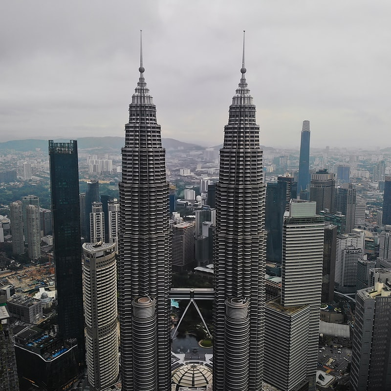

“Asia, the largest continent in the world is the home of diverse cultures and people. Asian culture is vibrant and fascinating. The continent has ancient traditions and cultures that have been passed down from generation to generation.”
↓
Singapore is a wealthy city-state in Southeast Asia. It is well-known for its conservatism and stringent local laws. Singapore is a country full of greenery and innovative architectural structure.
Sentosa is an island best known for its luxurious hotels, tropical beaches and thrilling attractions. In Malay, the word Sentosa means peace and quiet. Sentosa is famous for having one of the largest oceanariums, three beaches(Palawan, Siloso, Tanjong), thrilling rides, resorts, waterparks, Univeral Studios and much more.
Tips: The best time to visit Sentosa Island is between June to July and October to December. It is better to wear loose, light-fitting clothes as the climate of Singapore is generally hot. It is better to get to the adventure rides early in the morning before it gets hot. We recommend packing shades, hats, and Sun protection essentials to avoid scorching Sun, as it gets hot between late mornings to mid-afternoon and staying hydrated.
The Gardens by the Bay is a 101-hectare natural park in Singapore's Central Region, next to the Marina Reservoir. The main attractions for Gardens By The Bay is flower dome, cloud forest, Supertree Grove and OCBC Skyway, floral fantasy, heritage garden, and outdoor garden.
Tips:To prevent crowds, we recommend going on weekdays. It is best to go early in the morning or late in the evening when it is cooler, because the Cooled Conservatories are open until 9 p.m. and have a distinct ambience after dark. It is important to remember that food and beverages are not permitted in the Flower Dome or Cloud Forest.
Mount Faber Park is a famous tourist destination, with busloads of people making their way up the road to enjoy panoramic views of the city from its top. The major draw of Mount Faber Park is riding the Singapore Cable Car from Mount Faber to Sentosa Island and taking in the panoramic vista from a high height.
Tips:The best time to visit Mount Faber Park is during its operating hours, which are Monday through Friday. The hours of operation are 8:45 a.m. to 10 p.m.
Malaysia is recognized for its gorgeous beaches, isolated islands, high hill stations, and UNESCO World Heritage Sites, as well as its capital city of Kuala Lumpur, a powerful financial and economic centre in South East Asia.
The Petronas Towers, or the Petronas Twin Towers, are twin skyscrapers in Kuala Lumpur, Malaysia. It is the 7th tallest building in the world. The Twin Tower has 88 floors with 5 being underground. It is home to the world's highest skybridge. The bridge connecting the two buildings on the 41st and 42nd floors is the highest sky bridge in the world. The tower is the symbol of pride of Malaysia.
Tips:The best time to see Petronas Tower is in the late evening. This will also allow you to witness the Light and Fountain Show, which usually begins between 7 p.m to 9 p.m. and is located right beyond the Petronas Tower.
Gunung Mulu National Park is a protected rainforest in Malaysian Borneo. Gunung Mulu National Park is well-known for its limestone karst formations, which include some of the most beautiful caverns on the planet. Mulu has the world's largest subterranean chamber (the Sarawak Chamber), the world's largest cave tunnel (Deer Cave), and Southeast Asia's longest cave (Clearwater Cave).
Tips:Mulu can be visited all year around. Since it is a rainforest, you can expect frequent cooling rains. But we recommend not going between July and September as they are the hottest and driest month which make trekking more difficult. We suggest packing raincoat, non-slip closed footwear, torchlight, water bottle, insect repellent and hat.